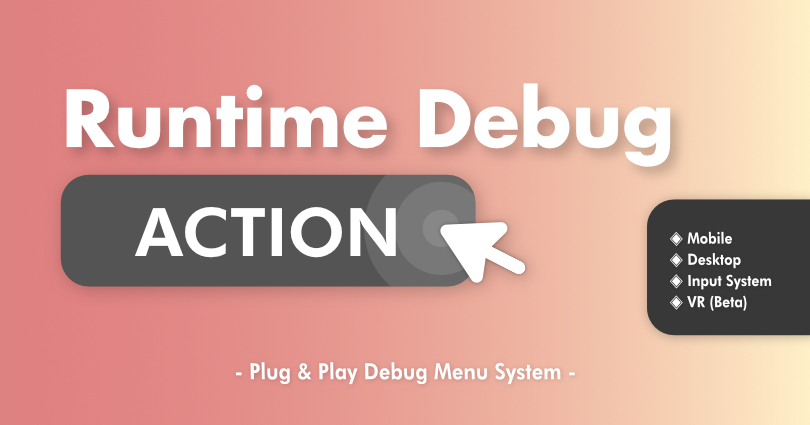

🩺 Runtime Debug Action
Welcome to the documentation for RuntimeDebugAction

Overview
RuntimeDebugAction is a runtime debug menu system that lets you register and trigger debug actions with no extra setup. With a set of built-in debug actions and a tiny logger that works out of the box, RDA is built to supercharge your mobile and desktop game development.
Warning
The documentation is still in it's early stages, please let me know me if there's anything out of place or missing.
Quick Start
Note
Take a look at the ➜QuickStart to get started
Discord
Note
Join our 💬discord server for quick questions and support!
Features
- Plug & play light weight debug menu system
- Keyboard navigation & touch input for mobile
- Support Unity's InputSystem
- No per scene setup require, auto injected UI system
- Mobile friendly
- (Beta) VR Support (Docs)
- Auto register action with reflection (Docs)
- Field (int, float, bool, string, enum)
- Property (int, float, bool, string, enum)
- Method
- Method with parameters (int,float,bool,string) - Action Types (Docs)
- Button (One-shot action) (Docs)
- Toggle (On/Off state action) (Docs)
- Input (Params input action) (Docs)
- Flag (Int based value selector action) (Docs) - Searchable menu
- Logger Panel
- Custom Actions (Docs)
- Attribute Reflection
- Fluent API
- Debug Action Component - Support Enter Play Mode Options, faster iteration
- Built-in debug action (Docs)
- Full source included
Demo
Demo Download Link